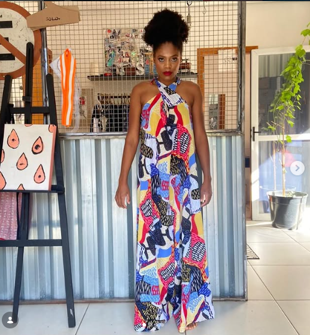

Psicoterapia
A psicoterapia é um espaço de escuta, presença e construção conjunta.
Um processo que respeita a singularidade, o momento e a história de cada pessoa, abrindo espaço para perceber a si mesma e a forma como se relaciona com o mundo.
Meu trabalho busca auxiliar quem chega até mim a caminhar pela própria vida de forma mais consciente e amorosa consigo.
Psicoterapia
Gestalt-terapia
Psicologia do Esporte
Sou psicóloga clínica, formada em Psicologia pela FUMEC. Minha trajetória profissional foi sendo construída a partir do interesse pela escuta, pelo encontro e pela singularidade de cada pessoa.
Foi nesse caminho que encontrei a Gestalt-terapia e aprofundei minha formação em Psicologia Clínica, Gestalt-terapia e Análise Existencial.
Também encontrei na Psicologia do Esporte uma forma de aproximar duas partes importantes da minha história: a psicologia e o esporte.
presença • escuta • encontro • movimento
A psicoterapia é um espaço de escuta, presença e construção conjunta.
Um processo que respeita a singularidade, o momento e a história de cada pessoa, abrindo espaço para perceber a si mesma e a forma como se relaciona com o mundo.
Na Gestalt-terapia, o olhar se volta para a pessoa como um todo: sua história, suas relações, seu contexto e a maneira como vive o presente.
O processo terapêutico favorece a ampliação da consciência sobre si, seus sentimentos, escolhas e possibilidades.
O esporte faz parte da minha história desde a infância. A Psicologia do Esporte surgiu do encontro entre duas áreas importantes da minha trajetória: o esporte e a psicologia.
Esse campo amplia meu olhar para as experiências vividas no contexto esportivo e para as relações entre pessoa, prática esportiva e saúde psicológica.

corpo • presença • movimentoSou atleta desde a infância e o esporte sempre esteve presente na minha vida.
No fim de 2023, comecei uma nova etapa da minha formação ao iniciar a pós-graduação em Psicologia do Esporte pelo Futebol Interativo.
Essa escolha nasceu justamente do desejo de aproximar a experiência que tenho com o esporte da minha trajetória como psicóloga.
Ver trajetóriaFormação, encontros e experiências que foram construindo minha forma de compreender e exercer a psicologia.
Conclusão da graduação em Psicologia. A colação de grau aconteceu em fevereiro de 2019.
Início da formação em Gestalt-terapia, realizada ao longo de dois anos, com aulas, leituras e encontros com profissionais de diferentes regiões do Brasil.
Início da pós-graduação em Psicologia Clínica na Universidade Federal de Minas Gerais.
Conclusão da especialização em Psicologia Clínica: Gestalt-terapia e Análise Existencial.
Tema da monografia desenvolvido durante a especialização, atravessado por reflexões sobre experiências vividas por ela e por seus ancestrais.
Início da pós-graduação em Psicologia do Esporte pelo Futebol Interativo, aproximando psicologia e esporte.
“Caminhar também é perceber o caminho que já foi construído.”
Acompanhe o Instagram para acessar os conteúdos publicados por Julliete.
Você pode iniciar a conversa diretamente pelo WhatsApp.
Esse primeiro contato ajuda a compreender o que você está buscando.
As informações sobre o atendimento podem ser alinhadas diretamente com Julliete.
Caso sua dúvida não esteja aqui, você pode conversar diretamente comigo pelo WhatsApp.
Se quiser saber mais sobre o atendimento, entre em contato.
Conversar com Julliete